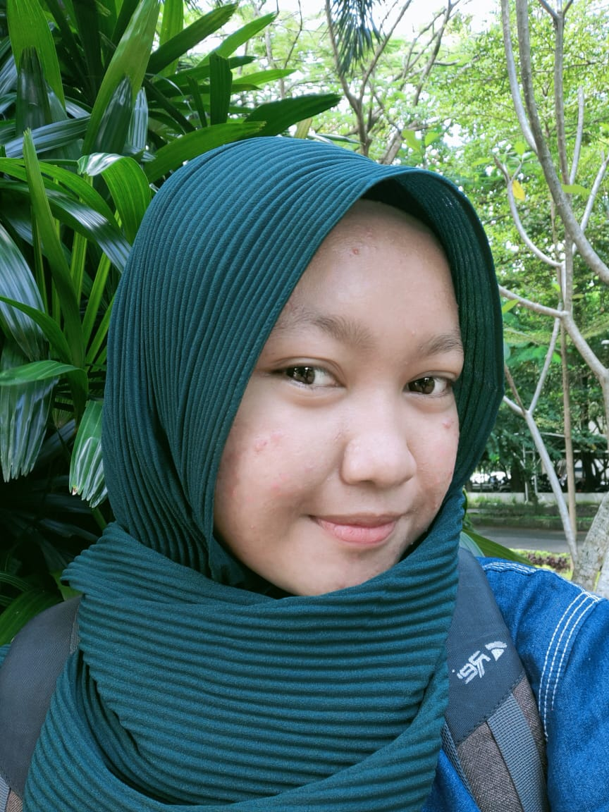

Hallo all..... Saya Nicky Julyatrika Sari Mahasiswi Teknik Informatika Semester 5 di Universitas Muhammadiyah Surakarta Memiliki ketertarikan terhadap dunia IT. khususnya pada Web Developer. Menyukai hal-hal yang berkaitan dengan teknologi.
Saat ini saya sedang mengikuti program kampus Merdeka Di PT.Imbacbyte Teknologi Edukasi(Skilvul) bagian Front-end Web Development
~lyalfya